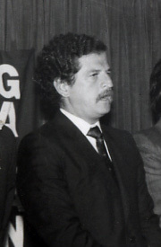
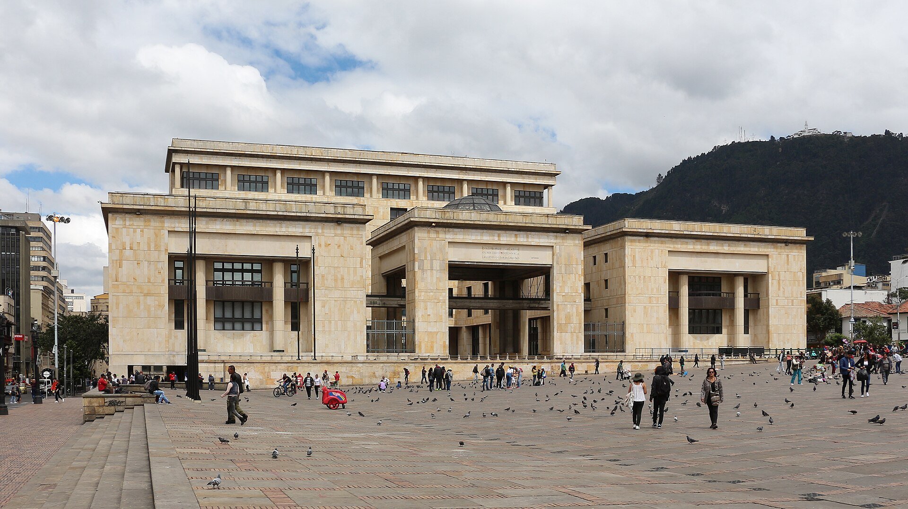

Economía ilícita
De la bonanza marimbera al tráfico internacional
Durante las décadas de 1970 y 1980, las redes de marihuana y luego cocaína se integraron a rutas internacionales de consumo. El crecimiento no fue aislado: dependió de contactos, puertos, aviación, lavado de dinero y mercados externos.
La violencia urbana aumentó junto con el sicariato, la extorsión y el uso de explosivos. Al mismo tiempo, algunos grupos promovieron obras públicas y construyeron redes de apoyo para obtener legitimidad social.
Pablo Escobar no fue una figura aislada: hizo parte de estructuras económicas y políticas que se alimentaron de corrupción, terror y debilidad institucional.
Organizaciones criminales
Medellín, Cali y estructuras rivales

.jpg){kind=link}

Cartel de Medellín
La organización liderada por Pablo Escobar y otros empresarios criminales buscó controlar rutas y laboratorios. Su política combinó soborno, compra de tierras, campañas políticas y guerra contra el Estado. La disputa por la extradición fue central en su estrategia de terror.
Cartel de Cali
Los hermanos Rodríguez Orejuela y sus socios construyeron redes que diferían en organización y estilo público del Cartel de Medellín. Aun así, se apoyaron en corrupción, lavado de activos y violencia. La estructura fue desarticulada gradualmente por investigaciones judiciales y operativos estatales.
Líderes y víctimas
Atentados contra periodistas y políticos


Rodrigo Lara Bonilla — 1984
Ministro de Justicia asesinado tras denunciar vínculos de narcotraficantes con la política.
Guillermo Cano — 1986
Director de El Espectador asesinado por su trabajo periodístico contra el narcotráfico.
Vuelo 203 de Avianca — 1989
Un avión explotó en Soacha con la muerte de todos los ocupantes. El atentado fue atribuido al Cartel de Medellín.
Luis Carlos Galán — 1989
Candidato presidencial asesinado en Soacha; su magnicidio fue investigado como parte de una estrategia narcoterrorista.
Edificio del DAS — 1995
Un carro bomba causó decenas de muertes y cientos de heridos en Bogotá. Se atribuyó al Cartel de Cali.
Bernardo Jaramillo — 1990
Candidato de la Unión Patriótica asesinado durante una campaña marcada por el exterminio político.
Las fuentes oficiales y judiciales difieren en detalles sobre autores materiales e intelectuales de algunos hechos. Esta página distingue hechos probados de atribuciones documentadas y procesos aún debatidos.
Política pública
La respuesta del Estado y sus límites
La ofensiva contra el narcotráfico incluyó extradiciones, leyes penales, operaciones policiales y cooperación internacional. También hubo infiltración criminal en instituciones, compra de medios y ataques contra jueces, periodistas y políticos.
En la práctica, la guerra contra las drogas estuvo marcada por prioridades cambiantes, violaciones de derechos humanos y tensiones sobre legalidad, extradición y guerra urbana.
Fuentes verificables